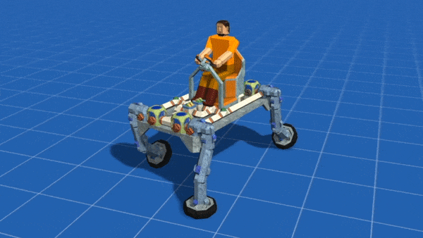

Hello,
This is a game and the first game I created. I am a bit unsure if it is qualified as a showcase here, if not, I am sorry and I will delete this post.
This game is built upon a game engine I forked from Urho3D. This game engine was initially forked from the Atomic Game Engine, from which I first got to know Urho3D. When the Atomic Game Engine was discontinued, I rebased my fork on Urho3D.
Before Urho3D and Atomic, I have tried a number of open source game engines. I must say Urho3D is one of the best open source engines I could find. If the reasons for which I forked the engine are considered, it is the best and only (these reasons include integration with Qt and easy to wrap for Dao).
Now about this game. The game is named Craftica .
Craftica is a creative sandbox game with ultra high degrees of freedom for building. It is partially inspired by Minecraft, but Craftica supports multiscale subvoxels so that smoother objects can be built in more realistic scales, and makes it possible to build elegant architectures.
Craftica also provides a large number of electronic and mechanical as well as other related device items, allowing players to build sophisticated circuits and circuit-controlled electronic and mechanical devices. Players can even build vehicles, aircrafts, robots and computers etc. high-tech objects from items as basic as logical gates.

This game was release on Steam EA nearly a year ago. But it is not until recently that it starts to really become what I hoped for this game. You may take a look at the following youtube video if you are interested:
Craftica: Building Your Wonderland